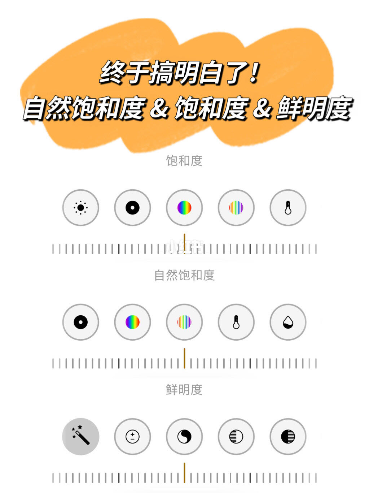
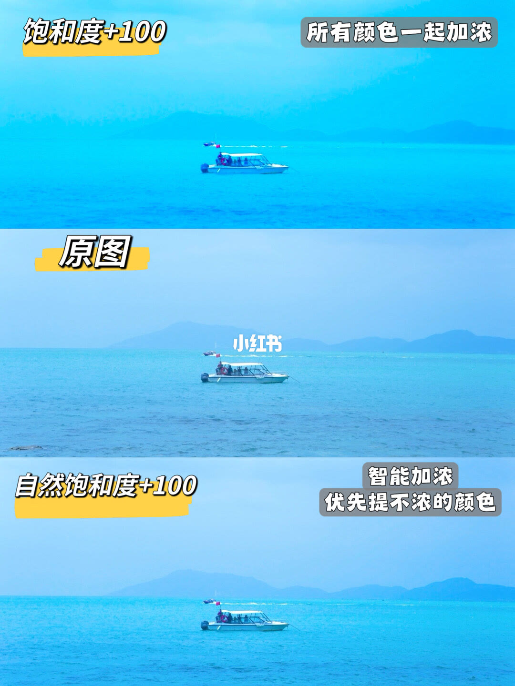
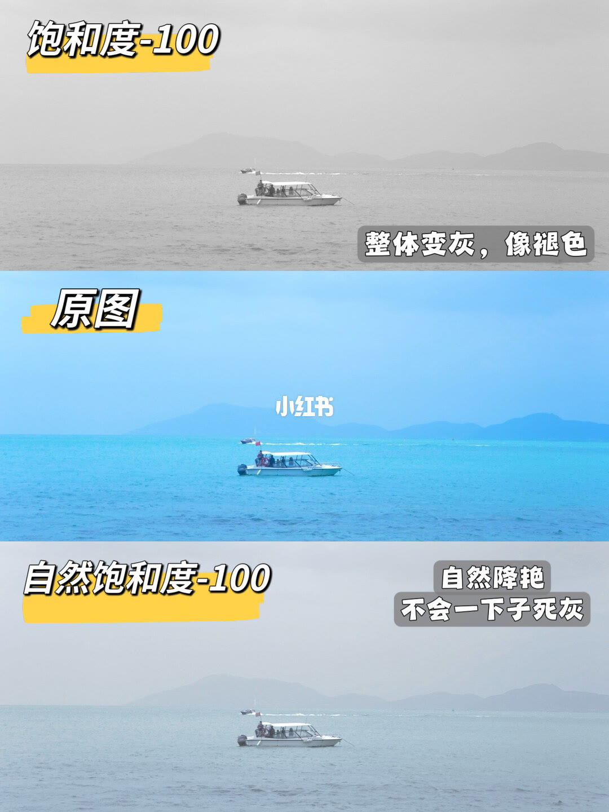
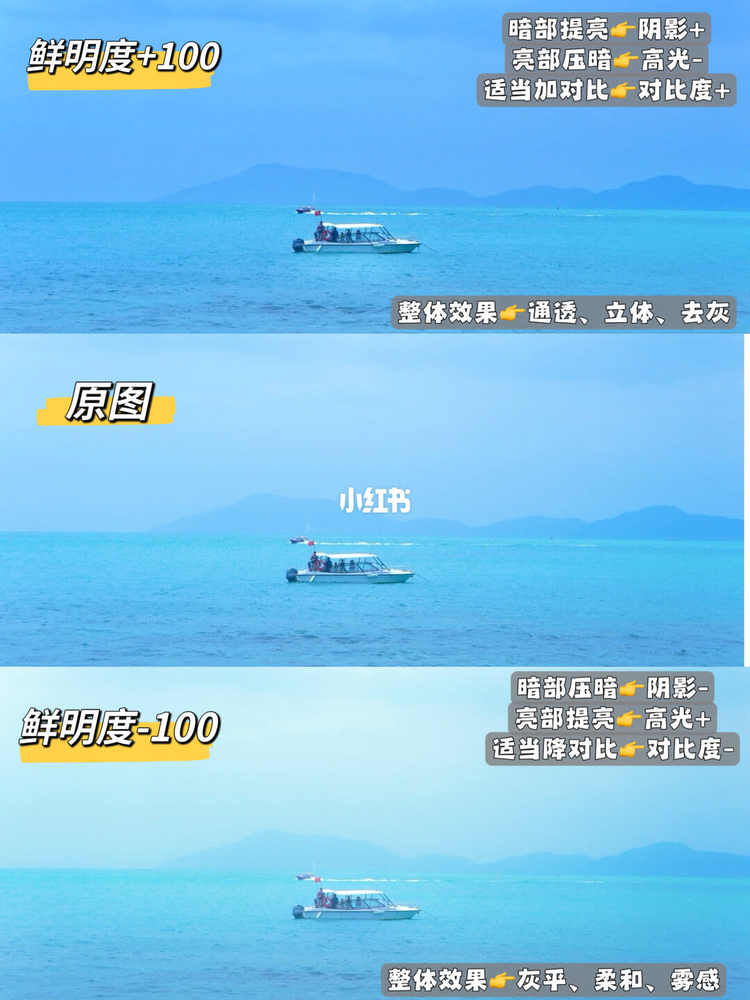

图文实录 · 小红书 · 小珊卓
饱和度≠自然饱和度≠鲜明度！调色不再乱拉✨
三个名字不是同一个滑块。饱和度是所有颜色一起加浓或一起褪灰；自然饱和度是优先提还不浓的颜色，往负向也不会一下子死灰；鲜明度动的是暗部、亮部和对比，正向被写成通透、立体、去灰，负向被写成灰平、柔和、雾感。
1/4
先把三个名字分开
白底。顶上橙色笔触里写着「终于搞明白了！」，下面一行是「自然饱和度 & 饱和度 & 鲜明度」。往下三行，每行一个名字加一条滑块：饱和度、自然饱和度、鲜明度。三条滑块都画在刻度中段，画面上没有标数字，无法确认是不是正好停在 0。这一页没有前后对比，也没有写往哪边拉会发生什么。

2/4
往正方向：全体加浓，还是优先提不浓的
同一张海面和白船的照片排成三格。上格黄标「饱和度+100」，右上灰气泡写「所有颜色一起加浓」。中格黄标「原图」，中间有「小红书」水印。下格黄标「自然饱和度+100」，旁边写「智能加浓」和「优先提不浓的颜色」。上格的蓝比原图更冲，下格也比原图浓，但没有上格那么整片发艳。图上没有别的滑块读数，无法确认这两格是不是只动了这一个参数。

3/4
往负方向：褪成灰，还是降艳但不死灰
还是这张海面和白船。上格黄标「饱和度-100」，右下写「整体变灰，像褪色」，这一格几乎没有颜色。中格仍是「原图」，中间仍有「小红书」水印。下格黄标「自然饱和度-100」，旁边写「自然降艳」和「不会一下子死灰」；海面还留着很淡的蓝，没有上格那么灰。同样没有其它参数，无法确认是不是单独拉到标注的那一端。

4/4
鲜明度两端：通透，或灰平雾感
仍是同一张照片，这次只比鲜明度。上格黄标「鲜明度+100」。右上三行：暗部提亮，像阴影加；亮部压暗，像高光减；适当加对比，像对比度加。右下写整体效果：通透、立体、去灰。中格是「原图」，有「小红书」水印。下格黄标「鲜明度-100」。右上三行反过来：暗部压暗，像阴影减；亮部提亮，像高光加；适当降对比，像对比度减。右下写整体效果：灰平、柔和、雾感。这里的「像」是类比，图上没有再标阴影、高光、对比度各自的数字。

汇总
三个滑块各管一件事
结论：饱和度是全体颜色一起变浓或一起褪灰。自然饱和度是优先动还不浓的颜色，往负向也不会一下子死灰。鲜明度按第 4 页是在动暗部、亮部和对比，正向做成通透、立体、去灰，负向做成灰平、柔和、雾感。
支撑：三个名字在第 1 页。饱和度与自然饱和度的正向对照在第 2 页，负向对照在第 3 页。鲜明度两端，以及阴影、高光、对比的对应方向，都在第 4 页。
边界：图上的 +100 和 -100 是对照标签，不是推荐用量。第 1 页滑块没有数字。说明里还写了肤色变橙、人像慎拉、阿宝色、自然饱和度保护肤色，以及鲜明度像自动通透按钮；这些句子不在四张图上，对比图也没有人脸。说明在「风景不通」处截断，后半无法确认。四张图的水印是「小红书」，作者名以笔记信息里的「小珊卓」为准。